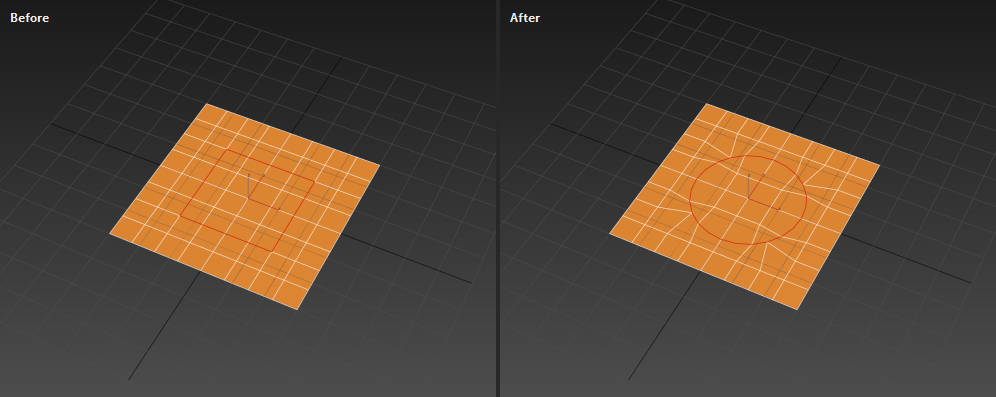
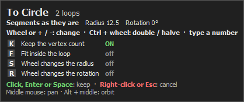

Tools / To Circle
To Circle
Turn selected loops into round circles, live.
What it does
To Circle takes closed edge loops, or the border of selected polygons, and makes them circles with the number of vertices you choose. It works on Editable Poly and Edit Poly and shows the result while you change the values.

Wheel changes the segments, then K / F / S / R options on a square loop.
How to use it
- Select closed edge loops, or polygons whose border you want round.
- In the right-click menu, choose To Circle (in the group with Connect).
- Use the mouse wheel or + / - to change the number of segments, or type a number.
- Click, Enter or Space keeps it. Right-click or Esc cancels.

Options
Each option is a key you press while the tool runs. The box at the top of the viewport shows which are on.
| Key | Option | What it does |
|---|---|---|
| K | Keep the vertex count | Keeps the loop's own number of vertices instead of the segments value. |
| F | Fit inside the loop | Makes the circle fit inside the loop rather than around it. |
| S | Wheel changes the radius | The wheel and typed numbers set the radius instead of the segments. |
| R | Wheel changes the rotation | The wheel and typed numbers set the rotation, in degrees. |
Ctrl + wheel doubles or halves the value. The viewport can still be moved while the tool runs: middle mouse pans, Alt+middle orbits, the wheel zooms.
Good to know
- Loops that are open, branching or straight are skipped, and the box tells you how many.
- Undo is one step.